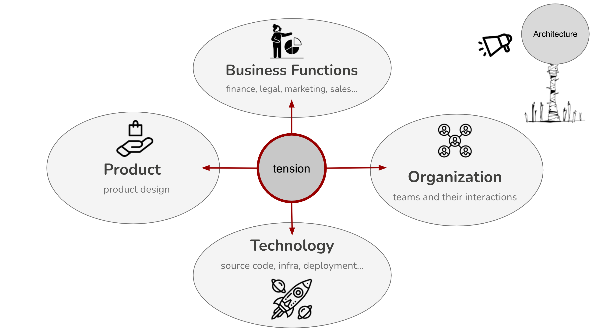
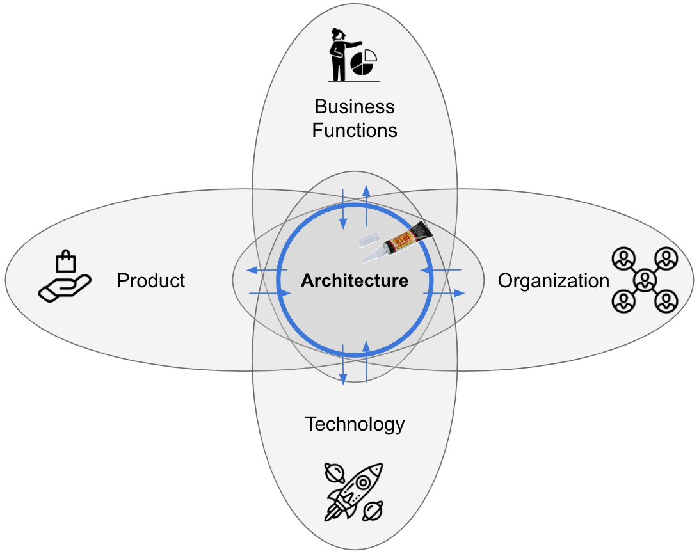

Architects as Superglue

IN THIS SECTION, YOU WILL: Understand the view on architects as superglue (people who hold architecture, technical details, business needs, and people together across a large organization or complex projects) and get valuable tips on developing “superglue” abilities.
KEY POINTS:
- Architects in IT organizations should develop as “superglue,” people who hold architecture, technical details, business needs, and people together across a large organization or complex projects.
- Architects need to be technically strong. But their unique strengths should stem from being able to relate technical issues with business and broader issues.
- Architects should stand on three legs: skills, impact, and leadership.
I believe architects in IT organizations should develop as “superglue.” I borrow the “superglue” view from Adam Bar-Niv and Amir Shenhav from Intel. They pointed out that instead of the superhero, we need “superglue” architects - the people who hold architecture, technical details, business needs, and people together across large organizations or complex projects. More recently, Tanya Reilly presented a similar view concerning software engineering positions.
The superglue characteristics mean serving as the organizational connective tissue, linking the “business wheelhouse” and the “engine room.” Architects, of course, need to be technically strong. But their unique strengths should stem from being able to relate, or glue, technical issues with business and broader issues.
From discussions I’ve had with engineering leaders, engineers, and architects, Figure 1 has crystallized as a representation of the “superglue” metaphor for architects.
 Figure 1: Architects serve as a superglue, connecting development teams with business stakeholders while linking teams with the internal communities and the external world.
Figure 1: Architects serve as a superglue, connecting development teams with business stakeholders while linking teams with the internal communities and the external world.
Architects must have good relationships with developer teams, local business stakeholders, and functions. Simultaneously, such a person needs to be well-connected with broader internal communities. External visibility is essential for architects, who can bring ideas from outside into the organization and promote the organization to the outside world.
Supergluing in Action: Reducing Tension among Business Functions, Product, Technology, Organization
The primary value of superglue architects in complex organizations is aligning business, product, technology, and organizational functions. Each of these four parts has its own designs or architectures.
Technology, product, organization, and business functions face specific challenges. Ideally, these structures all change simultaneously and stay in perfect sync. But in practice, these structures change and move at different speeds, leading to misalignment and tension among them (Figure 2). For example, we may organize teams using a well-defined domain model (organizational design). Still, if our IT system is a monolith (technical design), our teams will collaborate in a different pattern than the organizational design would suggest. On the other hand, if our teams are well-aligned with the technical domain model and implementation (e.g., teams have full ownership of microservices and can deploy them independently), but the product architecture differs from the microservice modularization (e.g., product features are differently grouped than technical services supporting them), we may need to change dozens of microservices when introducing relatively simple product change. Similarly, tension occurs when business objectives are misaligned with product or technology objectives (e.g., try reducing short-term costs while adding new features and migrating to the public cloud).
 Figure 2: The tensions between technology, product, organization, and business functions.
The main problem with this tension is that it can slow things down due to miscommunication or other misalignments, lead to bad decisions due to lack of information, introduce unnecessary complexity, and lead to missed opportunities. Too frequently, architecture sits on the side, shouting principles and abstract ideals that everyone ignores.
By acting as a superglue, the architecture practice can help reduce tension between technology, product, organization, and business functions, ensuring that critical conversations happen between these units. As Figure 3 illustrates, architecture should not try to be a superglue by adding new constructs between these four elements but by bringing them closer together. I sometimes joke that architecture practice is a self-destructive function, as by bringing these elements together, you are removing the need to have architecture practice.
 Figure 3: Architects should be in the middle of reducing tensions between technology, product, organization, and business functions.
While staying close to technology (engine room), architects must ensure that technology is serving the needs of customers and the business and that technical architecture is well aligned with the organizational design. At the same time, architects can help ensure that business, product, and organizational designs are well-informed about the state, risks, and opportunities of an organization’s technology to avoid creating impractical strategies, setting unrealistic goals, or missing opportunities. More specifically, there are several key risks that the misalignment brings, and architects need to be aware of:
- Building wrong products, if technology implementation makes incorrect assumptions not aligned with product requirements.
- Wrong prioritization of activities, if there are no clear business and product metrics, we may build “interesting” products that do not create value for our customers and business.
- Unexpected delivery delays due to underestimation of complexity, effort, and dependencies,
- Duplication of effort due to lack of business or product harmonization needed to facilitate building shared components,
- Building too complex products, as we may create a complex configurable system to address all possible cases, but we could have decided to simplify and harmonize our processes and products and build a more straightforward technical solution.
- Overengineering due to both lack of pushback to simplify products and lack of understanding of technology (e.g., use of a complex and expensive messaging middleware capable of handling millions of messages per hour for the use case where we have a few thousand messages per day),
- Building too simple, unscalable products, if we made assumptions that we will simplify and harmonize our processes, but in reality, we need to keep this essential complexity and support many variations as they create value for customers and businesses.
- Building low-quality products, due to creating unnecessary complexity and lack of critical knowledge and expertise in the organization,
- Having complicated dependencies between teams that slow them down due to suboptimal organizational design and lack of awareness of all the links between systems and people,
- Creating fragile, unsustainable team structures (e.g., having only one or two developers in some critical technology).
Superglue Abilities
Setting the architects’ goals to be “superglue” also requires some thought on developing architects as a superglue. Borrowing from Gregor Hohpe’s view on architect development from his book Software Architecture Elevator, I share the view that our architects should stand on three legs (Figure 4):
- Skills
- Impact
- Leadership
 Figure 4: Architect Profile: Skills + Impact + Leadership.
Figure 4: Architect Profile: Skills + Impact + Leadership.
Skills
Architects must have proper skill sets, possessing both knowledge and the ability to apply relevant knowledge in practice. These skills should include technical (e.g., cloud architecture or Kubernetes technology) and communication and influence skills.
A typical skillset of an architect includes:
- Hard (technical) skills, including extensive knowledge of both new technology and legacy technology stacks,
- Soft skills,
- Product development knowledge,
- Business domain knowledge, and
- Decision-making skills.
The section Skills provides more details.
Impact
The impact should be measured as a benefit for the business. Architects need to ensure that what they are doing profits the business. Architects that do not make an impact do not have a place in a for-profit business.
Examples of such impact may include:
- Aligning business, product, technology, and organizational strategies,
- Process optimizations and improvements with real, measurable impact on the work of an organization,
- Cost optimizations of systems based on data-informed decisions,
- Developing pragmatic technology strategies, helping businesses reach goals sustainably,
- Driving delivery of products, supporting teams to increase quality and speed of delivery,
- Supporting business innovation, bringing new pragmatic ideas aligned with business strategy and goals.
The section Impact provides more details.
Leadership
Leadership acknowledges that experienced architects should do more than make architecture:
- They are a role model for others in the company on both the technical and cultural front.
- Their technical influence may extend beyond your organization and reach the industry at large.
- They lead efforts that solve important problems at the engineering area level.
- They may contribute to the broader technical community through tech talks, education, publications, open-source projects, etc.
- They raise the bar of the engineering culture across the company.
Mentoring junior architects is the most crucial aspect of senior architects’ leadership. Feedback cycles in (software) architecture are inherently slow. Mentoring can save new architects many years of learning by doing and making mistakes.
The section Leadership provides more details.
Balanced Development
Architects must have a minimal “length” of all of these “legs” to be successful (Figure 5). For instance, having skills and impact without leadership frequently leads to hitting a glass ceiling. Such architects plateau at an intermediate level and cannot direct the company to innovative or transformative solutions. Leadership without impact lacks foundation and may signal that you have become an ivory tower architect with a weak relation to reality. And having impact and leadership qualities but no skills leads to impractical decisions not informed by in-depth knowledge.
 Figure 5: Architects must have a minimal “length” of all “legs” to be successful.
Figure 5: Architects must have a minimal “length” of all “legs” to be successful.
Questions to Consider
Being a superglue architect means constantly developing and redefining your role to benefit a changing organization. Ask yourself the following questions:
- How well do you think you currently embody the characteristics of a “superglue” architect? Which areas could you improve on to become more effective in this role?
- Reflect on your ability to connect the “business wheelhouse” and the “engine room” within your organization. How effectively do you bridge the gap between technical issues and business needs?
- How strong are your relationships with developer teams, local business stakeholders, and broader internal communities? How could you strengthen these connections?
- How much external visibility do you currently have? How could this be enhanced to promote the flow of ideas into and out of the organization?
- Can you identify specific instances of tension between your organization’s technology, product, organization, and business functions? What caused this tension, and how was it addressed?
- How could your current architecture aid in reducing tension between these functions?
- Have you witnessed the architecture sitting on the side, being ignored? If so, what steps can you take to actively involve architecture in decision-making processes?
- Are conversations between the technical, product, organizational, and business functions encouraged and facilitated within your organization? If not, how might they be initiated and supported?
- Considering the three legs of a successful architect (skills, impact, leadership), which are your strongest? Which might need more development?
Being Architect ← Being Architect: Introduction |
Being Architect Skills → |